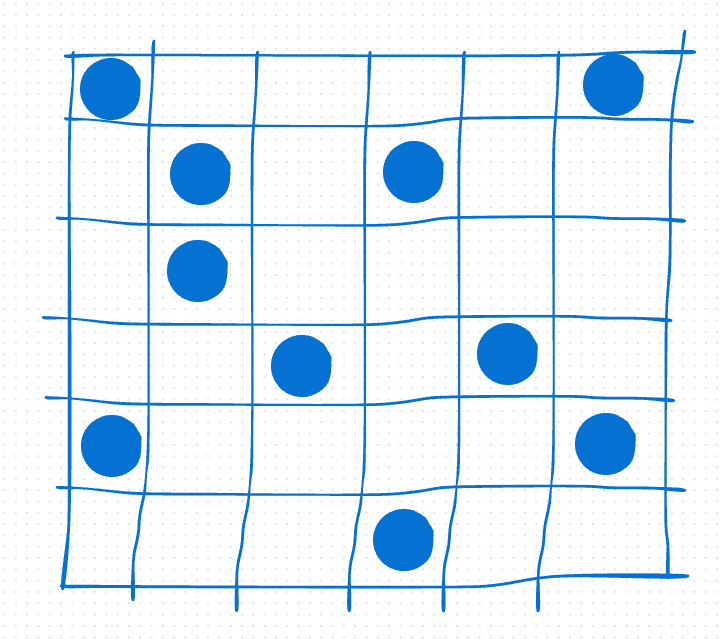
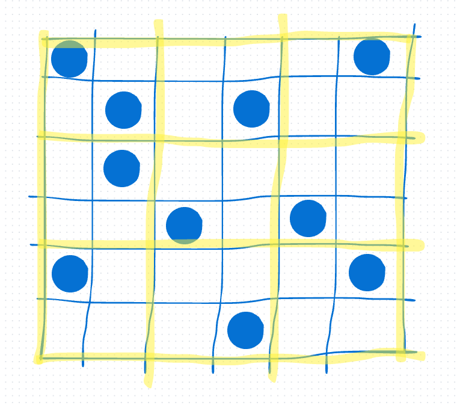
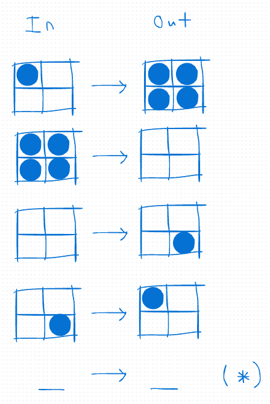
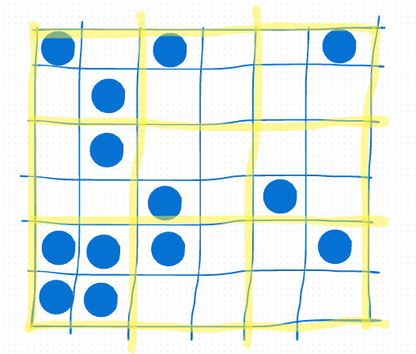
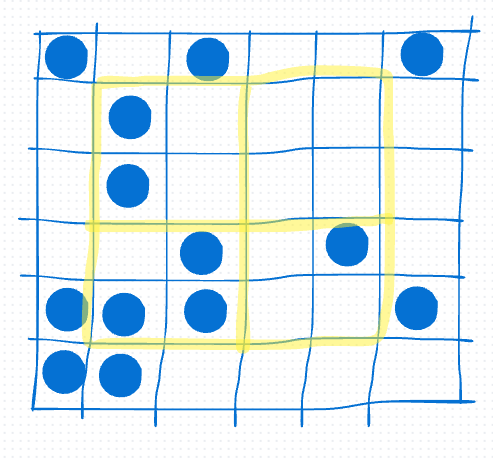
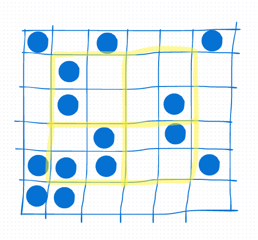

A cellular automaton (CA) has a bunch of cells of different colors. The color of each cell gets updated based on the colors of neighboring cells. A few examples of CA include Conway's Game of Life, rule 30, and Wireworld. In this article, we will focus on block cellular automata with black and white colors only. Block CA have a kinda weird way of updating but still produce interesting results.
For example, here is a block CA that simulates balls kinda:
Here is a block CA that produces cool-ish looking patterns:
Here is a block CA that produces random looking patterns:
Now let's define what a block CA is. A block CA has a 2d grid of cells with various colors. The grid starts from an initial pattern and is updated repeatedly.
For example, the block CA we'll use as the main example in this article starts from the following initial pattern:

It's useful to define all the possible colors that a block CA's grid cells can be. So we'll use S to denote the set of all possible colors that a block CA's grid cells can be.
Continuing with that example, we'll define that S = {white, blue}, that is only white and blue can be used on the block CA's grid.
A block CA's grid can be finite sized or infinite sized. Though the size should stay the same throughout updates. Finite sized grids are easier to store and update, so that's why I only implemented block CA for finite grids here. Though infinite grid block CA can also be implemented as well.
A block CA's grid is updated in two phases. For the first phase, we split the grid into n x n sized blocks, where n is some chosen fixed block size.
We'll show how the splitting is done in more detail by doing it on the example. We define the example's block CA to have n = 2:

A block CA has a chosen fixed block function B that takes in a n x n block and outputs another n x n block.
For our example block CA, it has B defined using the following image:

For every n x n block b in grid we've split, we replace it with B(b). This completes the first phase.
For our example, the first phase updates the grid into this:

For the second phase, we shift the splitting lines in the first phase by 1 grid step down and 1 grid step right. For my implementation, the splitting lines that are pushed outside the grid are then removed for simplicity. The problem with this is that the cells on the boundary don't get updated. See if you can come up with a sensible fix to this!
Here are the splitting lines for the example:

Now we use the new splitting lines to split the grid into blocks of size n x n. We replace each n x n block b with B(b) like in the first phase.
Here is the update on the example:

That's all to one step of updating. The block CA repeatedly updates its grid by doing this multiple times. Now you know the gist of how a block CA works!
Here is a block CA running with the same B as the block CA in the example but with a larger grid and initial pattern. Weirdly enough, this block CA looks very random for some reason.
I think the reason why two phases are used in one update is roughly cause every block in the first phase overlaps partially with some block in the second phase. Suppose we look at the blocks split from the first phase. On the second phase, each first phase block have part of them connected to part of a neighboring first phase block to make a whole second phase block. The second phase block is then updated using B. So neighboring first phase blocks have influenced part of each other on the second phase. If there were only one phase, each block would apply B to themselves repeatedly, so they wouldn't influence each other.
An advantage of block CA over other CA is that if B is invertible, then it's easy to reverse the block CA's updates. To reverse an update for a block CA, simply do the second phase first but use the inverse of B instead of B and then do the first phase but use the inverse of B instead of B.
Here is the reverse block CA for the block CA example that we used:
Like in our example block CA, I found that many block CA can be used to generate random-looking numbers.
For example, this is a block CA that has a random invertible B with block size 4 starting from a blank initial pattern.
A pseudorandom sequence of bits can be obtained by running a block CA with S = {black, white} for some fixed number of steps, giving 1 iff the cell at a fixed position is black, and then repeating such.
Though this way of generating pseudorandom bits is too slow. I tried to make a TV static animation using it for this page but it lagged the whole page. Also, I don't know how to determine the quality of a pseudorandom number generator myself yet, so I don't know if whether this way of generating pseudorandom bits is good or not.